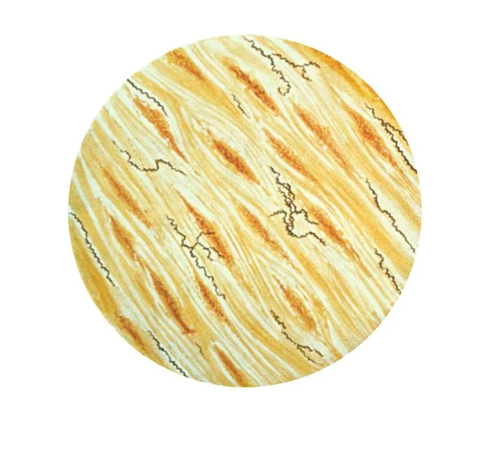
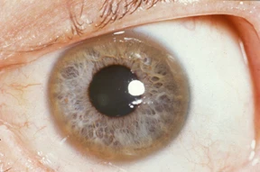

What a test can establish
There is no blood test that diagnoses depression. Doctors can order blood tests to look for conditions such as thyroid disease or anemia that may explain the symptoms, but those results cannot confirm major depression. MedlinePlus
ADHD and autism also rely on clinical assessment rather than a single biological marker. That means a history of symptoms, information about development and daily functioning, and often observations from other people. A test can contribute information without being able to make the diagnosis. APA: ADHD CDC: autism
The DSM, the Diagnostic and Statistical Manual of Mental Disorders, organizes these assessments. Published by the American Psychiatric Association, its current edition is DSM-5-TR, the fifth edition's 2022 text revision, with subsequent updates. It gives criteria, descriptions and other conditions to consider. The APA explicitly says the criteria require trained clinical judgment. APA: about DSM-5-TR
But the manual does include disorders with identifiable biological causes. Narcolepsy appears in its sleep chapter. The neurocognitive chapter includes conditions due to Alzheimer's disease, Huntington's disease and prion disease. Other entries describe psychiatric symptoms caused by substances, medications or another medical condition. A disease doesn't automatically leave psychiatry when someone finds a test for it. APA: contents APA: narcolepsy
Even a biological test has a specific job. In 2025 the FDA cleared a blood test that helps detect amyloid pathology associated with Alzheimer's in adults aged 55 and older who have cognitive symptoms. The FDA says it is neither a screening test nor a stand-alone diagnosis. A positive result still needs a clinical interpretation. FDA, 2025
Some tests identify a cause or pathology. Many common psychiatric diagnoses depend primarily on the course of symptoms and their effects on a person's life.
Both columns need clinical judgment. A biological cause and a DSM diagnosis can describe different aspects of the same illness.
The harder question is how well a diagnosis explains a person's difficulties. Does it distinguish their condition from similar ones? Does it predict the course, identify a useful treatment or justify an accommodation? Those questions require evidence beyond whether a checklist fits.
Where ordinary traits become disabling
Everyone gets distracted or worried. Diagnosis asks about a persistent pattern: how it developed, how severe it is and what it prevents someone from doing. A familiar symptom is only one part of that account.
Persistent difficulty with attention, organization or impulse control that interferes with daily life. A person can concentrate well on some activities and struggle badly with others.
Some symptoms must have been present before age 12, with difficulties in more than one setting.
Depressed mood or loss of interest, accompanied by changes such as fatigue, sleep disturbance, impaired concentration or thoughts of death. An episode lasts at least two weeks.
Duration alone is insufficient: the symptom pattern, impairment and alternative explanations matter.
Persistent, excessive worry about several areas of life, difficult to control and often accompanied by tension, fatigue or disturbed sleep.
The concern may have a real subject. The difficulty is its persistence, intensity and cost.
Episodes of mania or hypomania, changes in mood and activity that can include unusually little need for sleep, racing thoughts and risky behavior.
Bipolar I requires mania; bipolar II involves hypomania and major depression. Everyday mood swings are insufficient.
A cutoff creates a difficult boundary. Two people just above and below it may resemble each other more than two people who both qualify. Yet a shared label helps clinicians communicate, compare treatments and arrange support. Its usefulness and the uncertainty around its boundary can coexist.
Biological evidence also comes in forms that aren't diagnostic tests. A review of ADHD twin studies reported an average heritability estimate of 74 percent. Heritability describes variation in a population under a model; it isn't the percentage of an individual's condition caused by genes, or a DNA result that confirms ADHD. Faraone and Larsson, 2019
Huntington disease involves an expanded CAG sequence in the HTT gene. Penetrance means the likelihood that a genetic variant produces the disease. These are categories, not a proportionally spaced number line.
An intermediate allele generally does not cause disease in the carrier, but can expand when passed to a child. With 36 to 39 repeats, some carriers never develop symptoms. Full penetrance assumes survival through a normal life span. GeneReviews
A symptom with several possible causes
Psychosis includes hallucinations, such as hearing voices others don't hear, and delusions, beliefs held despite compelling contrary evidence. It is a set of symptoms with several possible causes. APA
A disorder involving symptoms such as hallucinations, delusions, disorganized thinking and reduced motivation. Diagnosis considers the course over time and effects on functioning.
Psychosis and major mood episodes over the course of an illness. Mood episodes occupy most of that course, but at least two weeks of hallucinations or delusions occur outside them.
Delusions lasting at least a month, without the full symptom pattern of schizophrenia. Functioning outside their effects is relatively preserved, although their consequences can be serious.
Psychotic symptoms lasting at least a day and less than a month, followed by a return to the previous level of functioning. Stress may precede the episode, but is not required.
The last three sketches concern the timing and pattern of psychosis. Medical and substance-related causes also need consideration; the DSM lists those diagnoses explicitly. A first assessment may remain provisional while the history and course become clearer. APA: psychotic disorders
A much older example is general paresis, a progressive illness involving psychiatric symptoms and cognitive decline. In 1913, Noguchi and Moore demonstrated syphilis bacteria in affected brains. Penicillin treatment for syphilis was first reported in 1943, three decades later. Finding a cause and having an effective treatment were separate events. Noguchi and Moore, 1913 Mahoney et al., 1943

These examples support a practical requirement: investigate plausible medical causes of psychiatric symptoms. They don't show that all psychosis has a hidden infection or that routine symptoms demand every rare-disease test. The workup depends on the history and examination. Graus et al. CDC: neurosyphilis
What a normal scan doesn't settle
Pain, disturbed sleep, compulsive rituals and changes in eating can be disabling even when a scan doesn't explain them. These diagnoses concern different patterns, not a common rule that the symptoms must lack a physical cause.
After a qualifying traumatic event, symptoms can include intrusive memories, avoidance, changes in mood and beliefs, and heightened arousal. They must persist and cause distress or impairment.
Obsessions are unwanted intrusive thoughts, images or urges. Compulsions are repetitive actions or mental rituals. They become time-consuming or cause substantial distress or impairment.
Insight varies; a person does not always recognize that the belief is unreasonable.
Anorexia, bulimia and binge-eating disorder have different patterns of restriction, bingeing and compensatory behavior. Not every eating disorder involves distorted body image or low weight.
Distressing physical symptoms accompanied by excessive thoughts, feelings or behaviors about them. A diagnosed physical disease can also be present.
An unexplained symptom alone does not establish this diagnosis.
Anorexia carries a high mortality risk. A 2011 meta-analysis reported mortality about 5.9 times the rate expected in its comparison populations. It compared eating disorders, so it cannot establish that anorexia is the deadliest of all psychiatric diagnoses. A separate opioid review reported an even higher relative mortality estimate, in different populations and settings. Those studies establish serious risks, not a universal ranking. Arcelus et al., 2011 Degenhardt et al., 2011
Nor is anorexia assessed only by talking. Weight, vital signs and laboratory results matter for evaluating medical complications, alongside the behavior and experience that define the disorder. A lack of a single diagnostic biomarker says little about how dangerous the condition is. APA
A pattern over time
Personality-disorder diagnoses concern enduring patterns of thinking, feeling and relating that cause distress or impair functioning. Their assessment includes cultural context. These labels should not be inferred from a few unpleasant encounters. APA
Marked difficulty regulating emotion, an unstable sense of self and intense relationships. Fear of abandonment, impulsivity and self-harm can be part of the pattern.
A persistent pattern involving grandiosity, a need for admiration and difficulty recognizing other people's needs. A boastful remark or an unpleasant relationship is insufficient.
A sustained pattern of disregarding other people's rights, including deceit, aggression or irresponsibility. The diagnosis requires a developmental history, not just a report of bad behavior.
Disruption of identity involving distinct personality states, with recurrent gaps in memory beyond ordinary forgetting. This is a dissociative disorder, a separate DSM group.
The personality sketches above summarize broad patterns, not entire people. Their resemblance to ordinary insults makes casual diagnosis especially unhelpful: calling someone a narcissist does not establish narcissistic personality disorder. A clinical account needs persistence, context and consequences. APA
Another genetic example: fatal familial insomnia
Biology, behavior and circumstances
A substance use disorder describes impaired control and continued use despite harm. Brain changes, access to a substance, learned habits and a person's circumstances can all matter. Calling it a disorder does not mean recovery is impossible. APA
DSM-5 combined the older categories of substance abuse and dependence in 2013, and moved gambling into its addiction chapter. Internet gaming disorder remains a condition for further study in the DSM. These are classification decisions informed by evidence, with consequences for what clinicians diagnose and researchers study. APA: DSM-5 changes APA: internet gaming
Alcohol use that becomes difficult to control and continues despite harm. Tolerance and withdrawal can occur, but the diagnosis covers a wider pattern of impaired control and consequences.
Problematic opioid use causing impairment or distress. Physiological dependence during appropriately supervised medical treatment does not by itself establish the disorder.
Problematic use of substances such as cocaine, methamphetamine or misused prescription stimulants. Prescribed ADHD treatment is not itself a substance use disorder.
Persistent gambling that causes impairment or distress, such as chasing losses, concealing gambling and jeopardizing relationships or work.
A urine drug test can provide evidence of recent exposure. It cannot by itself establish a substance use disorder; screening tests can also need confirmation. Conversely, tolerance or withdrawal during supervised medical treatment need not mean addiction. MedlinePlus: drug testing APA: opioids
The Vietnam-veteran study gives a useful limit on predictions about relapse. In a weighted sample of Army enlisted men returning in September 1971, about one in five reported heroin addiction in Vietnam. Among those addicted there, 12 percent reported a return to addiction during the next three years. Some resumed heroin use without meeting the study's definition of addiction. Robins et al., original report reprinted in 2010
This was an observational follow-up of a particular cohort, using the investigators' definitions of addiction. Availability and circumstances changed, and some men received treatment. It does not isolate one cause of remission or predict outcomes for someone facing today's opioid supply. It does show that persistent addiction was not inevitable in that sample.

Agreement, evidence and judgment
Two clinicians reaching the same diagnosis is reliability. Whether the category captures a useful and well-supported distinction is a question of validity. A reproducible label can still group together people with different causes, courses or treatment needs.
Clinicians independently interviewed patients on separate occasions. Bars show intraclass kappa, agreement adjusted for that expected by chance; whiskers show 95 percent confidence intervals. Kappa is not a percentage correct. Regier et al., 2013
These are selected results from different clinical samples, including pediatric autism and ADHD. GAD was tested at one adult site. The trials' label for 0.60 to 0.79 was "very good." They tested proposed DSM-5 criteria, not the current DSM-5-TR.
Major depression's pooled adult estimate was 0.28, in the investigators' "questionable" range. That is a reason to examine assessment quality and diagnostic boundaries. It is not a coin-toss accuracy score, a count of false diagnoses or a universal estimate for every clinical setting.
The design matters. The interviews used ordinary clinical methods on separate visits, allowing differences in what patients reported and clinicians elicited. The sample included people with overlapping conditions. Low agreement can reflect several problems, including missed co-occurring diagnoses; it does not identify which clinician, if either, was wrong. Clarke et al., 2013 Regier et al.
The manual's history also exposes errors in what medicine chooses to classify. In 1973 the APA board removed homosexuality itself as a disorder; members upheld that decision in a 1974 referendum. Research on people outside psychiatric treatment, gay activism and reconsideration of what counts as impairment all contributed. The later category "ego-dystonic homosexuality" was removed in 1987. Drescher, 2015
That history shows how prejudice can enter a diagnostic system and how evidence and public challenge can correct it. It does not show that every diagnosis is arbitrary or that the change happened without research. The relevant distinction was between a sexual orientation and an illness, not between two laboratory results.
A more recent change concerns bereavement. DSM-5 removed the earlier exclusion that discouraged diagnosing depression soon after a loved one's death. It also directs clinicians to distinguish ordinary grief from a depressive episode. Two weeks of sadness after a loss is not, by itself, major depression. The change makes careful judgment more important: a clinician must recognize depression without treating ordinary grief as an illness. APA: bereavement exclusion
Researchers need not accept the DSM's boundaries as final. NIMH's Research Domain Criteria program studies dimensions such as cognition and emotion across current diagnostic categories. It is a research framework, not a replacement diagnostic manual for clinical care. NIMH: RDoC
Historical source for the pellagra caption: NIH history
A diagnosis can guide treatment and support without explaining every symptom or fixing a person's identity. When assessing its usefulness, ask what observations support it, what competing explanations were considered and what would lead the clinician to revise it. Those are questions a symptom checklist on a screen cannot answer.
The remaining uncertainty is often about the category itself: whether it separates conditions with meaningfully different courses or merely collects similar symptoms. A future biological test may help answer that question. Its value will depend on what it predicts for the people who take it.
What the evidence covers
The clinical links describe conditions; the field trials measure agreement in particular samples. Neither is a test of an individual reader. The genetic and medical examples illustrate different forms of evidence, including their limits.
Study methods and source list
The FDA cleared NEBA, an EEG aid for ADHD assessment, in 2013. Its labeling explicitly excludes stand-alone diagnosis. FDA review
Clinical sketches omit much of the full DSM criteria. They describe symptom patterns rather than prevalence: population estimates vary with age, country, survey methods and the period measured. The guide's groups also differ from the DSM's chapter organization.
The reliability figure selects six estimates from Regier's tables 2 and 4. It combines adult and pediatric results and shows the reported confidence intervals. Clarke's methods paper describes stratified sampling and visits separated by four hours to two weeks. These results should not be read as a league table of diagnostic truth.
The two mortality reviews used different cohorts and comparison populations. Arcelus compared eating disorders; Degenhardt studied regular or dependent opioid use. Their relative mortality estimates cannot produce a precise ranking for all psychiatric diagnoses or an individual prognosis.
- The manual and diagnostic testing
- APA: DSM-5-TR, criteria and clinical judgment
- APA: DSM-5 table of contents, including biological and medical-associated conditions
- APA: narcolepsy in DSM-5-TR
- MedlinePlus: depression screening and laboratory testing
- CDC: autism assessment
- FDA: 2013 NEBA EEG clearance, an ADHD assessment aid
- FDA: 2025 Alzheimer blood-test clearance and limits
- Regier et al. (2013): DSM-5 field trials, reliability results
- Clarke et al. (2013): field-trial design and sampling
- Drescher (2015): homosexuality and DSM history
- APA: removing the bereavement exclusion
- NIMH: Research Domain Criteria
- Biology, medical causes and outcomes
- Faraone and Larsson (2019): ADHD genetics and twin-study models
- GeneReviews: Huntington disease, repeat categories and predictive testing
- Graus et al. (2016): autoimmune encephalitis, diagnostic guidance
- Noguchi and Moore (1913): syphilis bacteria in affected brains
- Mahoney et al. (1943): early-syphilis penicillin report
- CDC: neurosyphilis evaluation and treatment syphilis and lasting damage
- Arcelus et al. (2011): eating-disorder mortality meta-analysis
- Degenhardt et al. (2011): opioid mortality meta-analysis
- NHLBI: narcolepsy
- StatPearls: narcolepsy diagnostic criteria
- GeneReviews: genetic prion disease
- Robins et al.: Vietnam veterans at three years, original paper reprinted in 2010
- NIDDK: Wilson disease, symptoms, diagnosis and treatment
- NIH: Goldberger, pellagra and niacin
- Clinical sketches
- APA patient guides linked in the cards: ADHD, depression, anxiety, bipolar disorders, schizophrenia, PTSD, OCD, eating disorders, somatic symptom disorder, dissociative disorders and gambling. personality disorders substance use disorders
- Clinical references linked in the psychosis cards: schizoaffective disorder, delusional disorder and brief psychotic disorder. APA: opioid use disorder MedlinePlus: drug testing
- APA: 2013 substance-use classification changes internet gaming status